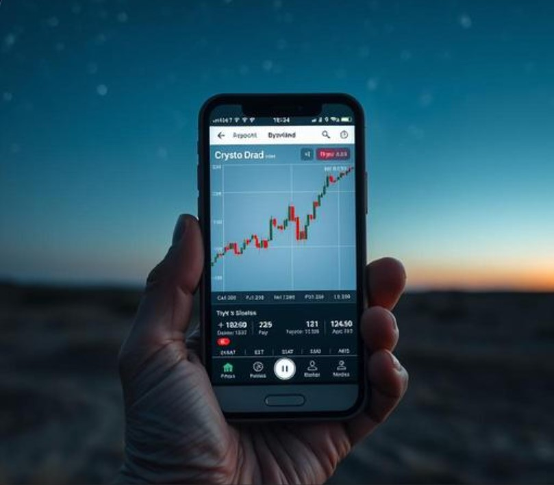

Anyone who's been in crypto long enough to live through multiple full market cycles develops a particular kind of calm that newer holders don't have yet. Not indifference — genuine calm, the specific kind that only comes from having already lived through the worst-case scenario and discovered you survived it.

The First Crash Teaches You Fear
The first real bear market a crypto holder lives through is almost always the hardest, psychologically. The portfolio value drops, sometimes dramatically, and there's no internal reference point yet for whether this is normal or catastrophic. Behavioral finance research on loss aversion (a well-documented bias where losses are felt roughly twice as intensely as equivalent gains) explains why this first experience tends to be disproportionately stressful relative to the actual financial stakes for most casual holders.
The Second Crash Teaches You Pattern Recognition
By the second cycle, something shifts. The drop still doesn't feel good, but it stops feeling unprecedented. There's a memory now — an actual lived reference point — that says markets like this have recovered before, even if recovery isn't guaranteed and nobody serious claims it is.
The Third Crash Teaches You Something Different Entirely
By the third cycle, longtime holders often describe a genuinely different relationship to the whole experience: less emotional reactivity, more attention to the community and culture that drew them in originally rather than the price chart itself. Several long-term Dogecoin holders, in particular, describe this shift specifically — the joke that got them in the door in the first place becomes more important to them than the speculative upside ever was, especially after multiple cycles where the upside came and went and the community stayed.
What Actually Lasts Across Multiple Cycles
If there's a consistent theme in long-term holder stories, it's this: the price charts are forgotten remarkably fast (nobody can usually recall the exact numbers from two cycles ago without checking), but the community moments — who they met, what they laughed about, the genuinely strange shared experience of riding the same volatility together — those are what people actually remember and value years later.
Marking the Years, Not Just the Price
This is part of why some long-term holders, having watched the charts rise and fall more times than they can easily count, have started using small amounts of crypto for something that has nothing to do with price at all — claiming a star on GalaxySpace, paid in Dogecoin, to mark a personal milestone, a friendship made through the community, or simply how far they've come since that first nervous purchase years ago.
You can create one here — a small, permanent thing that, unlike a chart, won't fluctuate by morning.